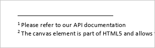
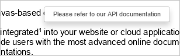
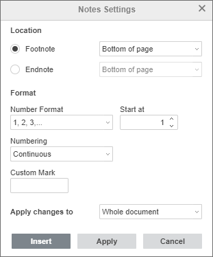

Umetanje fusnota
U Document Editor možete umetati fusnote da dodate objašnjenja ili komentare za određene rečenice ili termine, pravite reference na izvore itd.
Umetanje fusnota
Da biste umetnuli fusnotu u dokument,
- postavite tačku umetanja na kraj teksta na koji želite dodati fusnotu,
- prebacite se na karticu References na gornjoj alatnoj traci,
-
kliknite ikonu Fusnota na gornjoj alatnoj traci, ili
kliknite strelicu pored ikone Fusnota i izaberite opciju Insert Footnote,Oznaka fusnote (tj. superskript koji označava fusnotu) pojaviće se u tekstu dokumenta, a tačka umetanja će se pomeriti na dno trenutne stranice.
- upišite tekst fusnote.
Ponavljajte ove korake da dodate fusnote za druge delove teksta u dokumentu. Fusnote se numerišu automatski.

Prikaz fusnota u dokumentu
Ako postavite kursor miša na oznaku fusnote u tekstu, pojaviće se mali iskačući prozor sa tekstom fusnote.

Navigacija kroz fusnote
Da lako pređete kroz dodate fusnote u tekstu,
- kliknite strelicu pored ikone Fusnota na kartici References,
- u odeljku Go to Footnotes koristite strelicu da odete na prethodnu fusnotu ili strelicu za sledeću fusnotu.
Uređivanje fusnota
Da uredite podešavanja fusnota,
- kliknite strelicu pored ikone Fusnota na kartici References,
- izaberite opciju Notes Settings iz menija,
-
promenite parametre u prozoru Notes Settings koji će se pojaviti:

- Označite Footnote polje da biste uređivali samo fusnote.
-
Postavite Lokaciju fusnota na stranici izborom opcije iz padajućeg menija:
- Bottom of page - postavlja fusnote na dno stranice (podrazumevana opcija).
- Below text - postavlja fusnote bliže tekstu, što je korisno za stranice sa kraćim tekstom.
-
Podesite Format fusnota:
- Number Format - izaberite format brojeva: 1, 2, 3,..., a, b, c,..., A, B, C,..., i, ii, iii,..., I, II, III,....
- Start at - pomoću strelica postavite broj ili slovo od kojeg počinje numeracija.
-
Numbering - izaberite način numerisanja fusnota:
- Continuous - numeriše fusnote sekvencijalno kroz ceo dokument,
- Restart each section - počinje numeraciju fusnota od 1 (ili drugog karaktera) na početku svake sekcije,
- Restart each page - počinje numeraciju fusnota od 1 (ili drugog karaktera) na početku svake stranice.
- Custom Mark - postavite specijalan karakter ili reč kao oznaku fusnote (npr. * ili Napomena1). Unesite karakter/reč u polje i kliknite Insert.
-
Upotrebite padajući meni Apply changes to ako želite da primenite podešavanja na Ceо dokument ili samo na Trenutnu sekciju.
Napomena: za različito formatiranje fusnota u različitim delovima dokumenta, prvo dodajte prelome sekcija.
- Kada završite, kliknite Apply.
Brisanje fusnota
Da uklonite pojedinačnu fusnotu, postavite tačku umetanja odmah pre oznake fusnote u tekstu i pritisnite Delete. Ostale fusnote će se automatski renumerisati.
Da obrišete sve fusnote u dokumentu,
- kliknite strelicu pored ikone Fusnota na kartici References,
- izaberite opciju Delete All Notes iz menija,
- u pojavljenom prozoru izaberite Delete All Footnotes i kliknite OK.